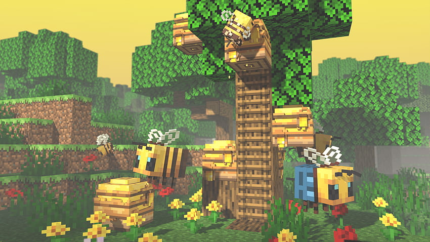

Exploring Minecraft's Diverse Game Modes
Survival Mode
Minecraft offers several distinct game modes, each providing a unique way to experience the game and its many features. In Survival Mode, players start with minimal resources and must gather materials, craft items, and build shelters to survive against the elements and hostile mobs. This mode emphasizes resource management and strategic planning, making it ideal for those who enjoy a challenge and a sense of progression. Survival Mode also includes health and hunger bars that must be managed to maintain gameplay balance.
Creative Mode
Creative Mode offers a different experience entirely by removing all constraints on resources and allowing players to build and experiment freely. In this mode, players have access to an unlimited supply of blocks and can fly, making it perfect for constructing complex structures and elaborate designs without the need to gather materials. Creative Mode encourages imagination and innovation, offering a playground where the only limit is your creativity.
Adventure Mode
Adventure Mode is tailored for players who enjoy custom maps and challenges created by others. It introduces restrictions to certain gameplay mechanics, making it necessary to use specific tools and strategies to complete custom-designed adventures and quests. This mode is ideal for those who want to experience new content and challenges crafted by the Minecraft community.
Spectator Mode
Spectator Mode provides a unique perspective by allowing players to fly through and observe worlds without interacting with them. This mode is useful for exploring and understanding complex builds or simply enjoying the beauty of Minecraft's diverse environments.

Key Gameplay Features:
- Crafting System: Create tools, weapons, and other items using resources gathered from the environment.
- Redstone Mechanics: Use redstone to build complex machines, automated systems, and contraptions.
- Enchantments: Enhance your gear with magical properties to improve performance and abilities.
- Biomes: Discover and explore different biomes, each with its own distinct landscape and resources.
- Mobs and Animals: Encounter a variety of creatures, from friendly animals to hostile monsters, each adding depth to the gameplay.
Minecraft's wide array of modes and features ensures that there's something for everyone, whether you're a builder, explorer, or adventurer. Dive into the game and start your journey through the endless possibilities of the Minecraft universe!
